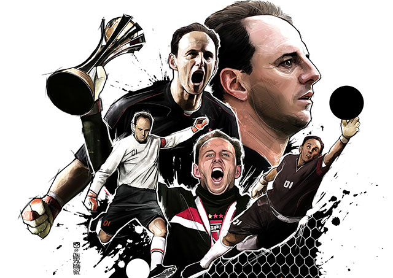

Rogerio ceni
Um dos maiores goleiros de todos os tempos,maoir idolo são paulino,maior goleiro artilheiro de todos os tempos.

- tem 18 titulos pelo sp
-
- 2x libertadores
- 2x mundiais clubes
- 3x campeonatos brasileiros
- Copa CONMEBOL
- Torneio Rio–São Paulo
- sul-americana
- 3x campeonatos brasileiros
- maior numero de jogos pelo mesmo clube 1237
-
- vitorias:648
- penaltis defendidos:50
- numeros de jogos sem sofrer gol:418
- recordistas de jogos como capital pelo clube
- maior goleiro artilheiro de todos tempos com 131 gols
-
- gols penaltis:48 gols
- gols de falta:63 gols
- melhor temporada: 2005 com 21 gols marcados